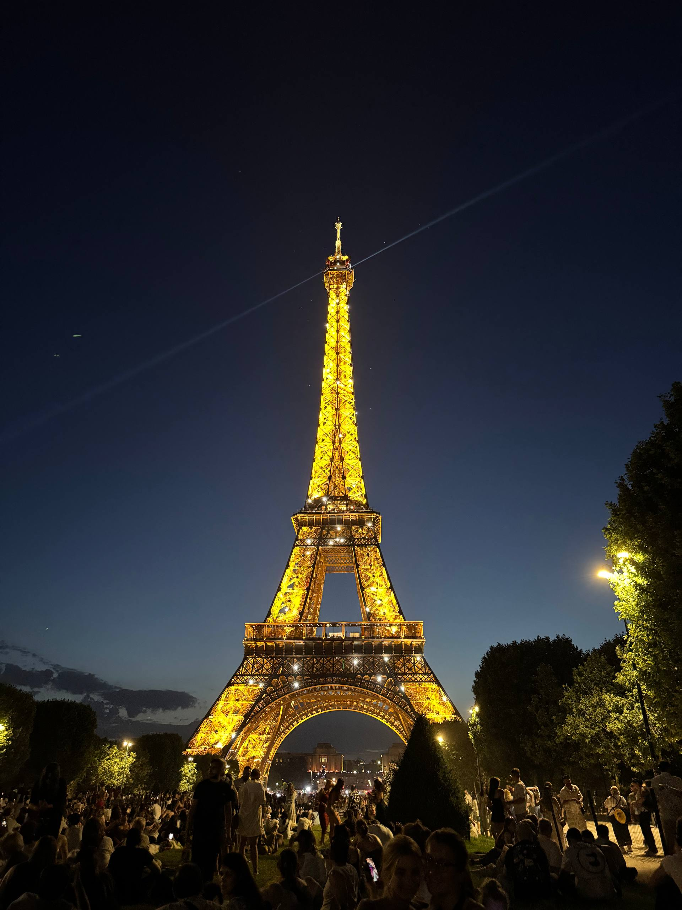
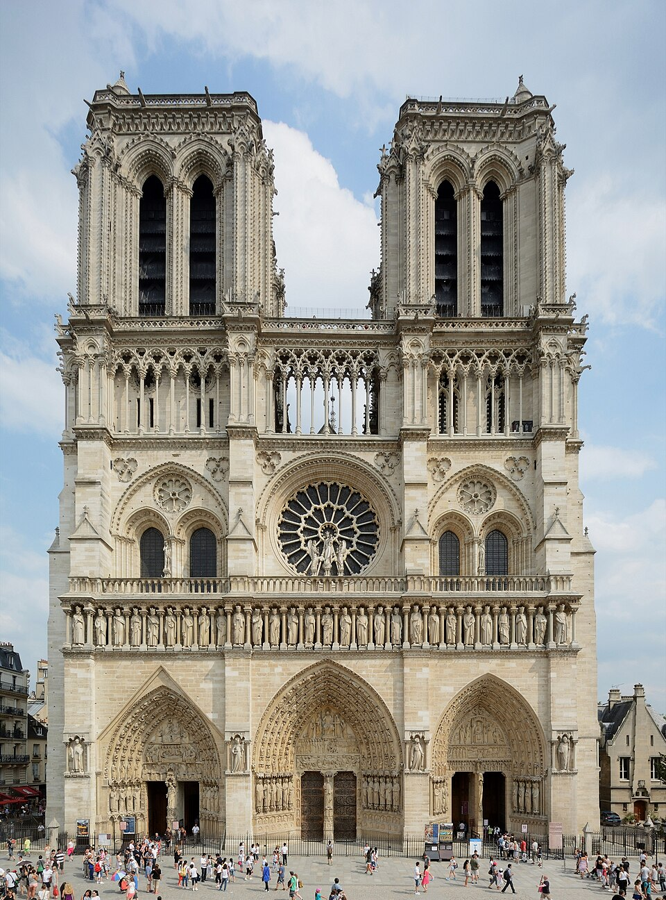
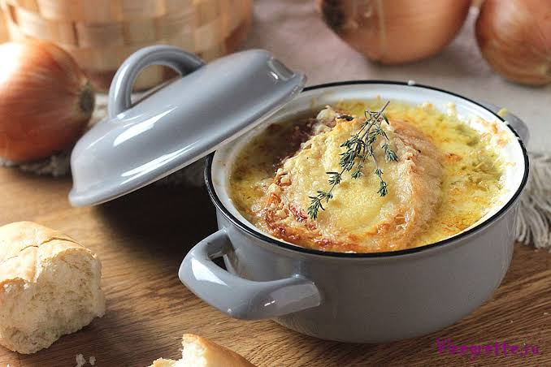
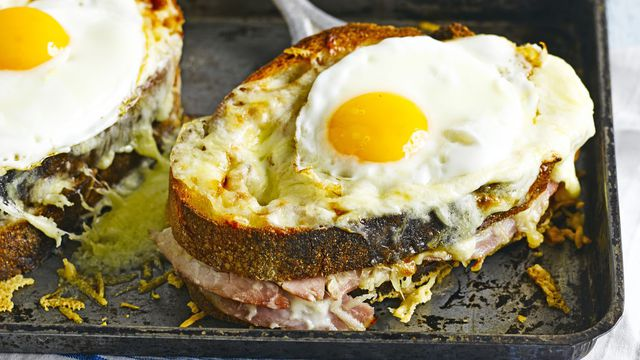
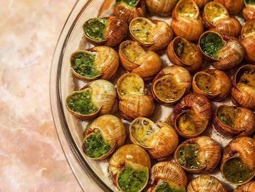
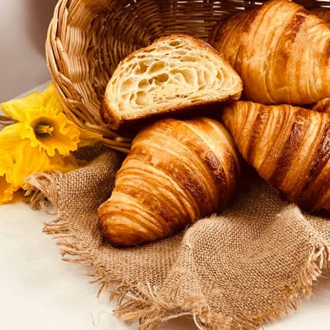
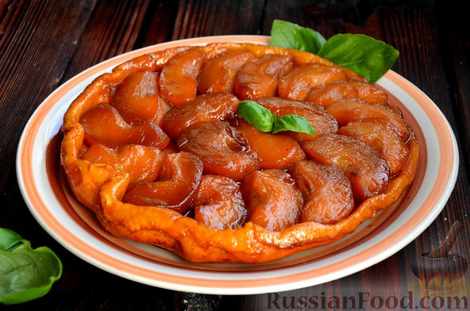
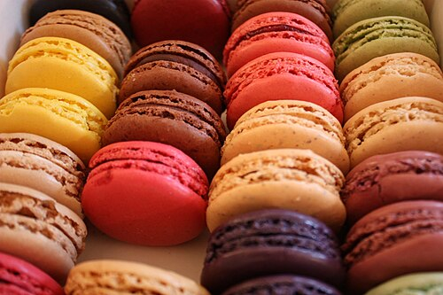

Визначні пам'ятки
Ейфелева вежа — ажурна металева вежа, зведена до Всесвітньої виставки 1889 року, що стала головною візитівкою Франції.

Е́йфелева ве́жа (фр. la Tour Eiffel) — архітектурна пам'ятка Парижа, розміщена на Марсовому полі, символ сучасної Франції. Вежу названо на честь її конструктора — Гюстава Ейфеля. Сам Ейфель називав її «300-метровою вежею» (фр. tour de 300 mètres), інша, народна назва — «Залізна пані» (фр. La dame de fer). Популярний туристичний об'єкт, щорічно приймає понад 6 мільйонів відвідувачів. 2007 року на вежі побувало 6 893 000 осіб, що на 78 000 відвідувачів більше, ніж у 2006, а за її історію з 1889 до 31 грудня 2007 року — 236 445 812 осіб. Вежа стала найвідвідуванішою і найфотографованішою туристичною пам'яткою світу.
Собор Паризької Богоматері (Нотр-Дам де Парі) — легендарний готичний собор XII–XIII століть, розташований на острові Сіте.

Собо́р Пари́зької Богома́тері (Нотр-Дам-де-Парі) (фр. Notre Dame de Paris) — собор у Парижі (Франція), присвячений Діві Марії, матері Ісуса Христа, кафедральний храм Паризької архідіоцезії. Один з найпрекрасніших витворів готичного мистецтва. Стоїть на острові Сіте, на місці першої християнської церкви Парижа, базиліки Святого Стефана. Ця церква була побудована на місці галло-римського храму Юпітерові, що стояв тут за часів римської влади. Собор є п'ятинефною базилікою. Висота будівлі становить 35 м, довжина — 130 м, ширина — 48 м. Висота дзвіниць — 69 м, вага дзвона Емануель у східній вежі — 15 тонн.
Музей Лувр — один із найбільших та найвідоміших музеїв світу, де зберігаються «Мона Ліза» та «Венера Мілоська».

Музе́й Лу́вр (фр. Musée du Louvre), Париж, Франція — один з найбільших музеїв світу і перший за кількістю відвідувачів розташований на правому березі в I окрузі Парижу між Сеною і вулицею Ріволі. Музей було відкрито 1793 року під назвою Центральний музей мистецтв Республіки. Лувр демонструє понад 300 000 експонатів від найдавніших часів до XIX століття на виставковій площі 72 735 м². У 2018 році кількість відвідувачів Лувру перевищила 10 млн осіб, що є рекордом.
Кухня та гастрономія
Париж заслужено вважають гастрономічною столицею світу. Французька кухня внесенна до списку Нематеріальної культурної спадщини ЮНЕСКО, а культура кафе та ресторанів є важливою частиною повсякденного життя парижан.
Цибулевий суп (Soupe à l'oignon)

Цибулевий суп (Soupe à l'oignon) — карамелізована цибуля у насиченому м'ясному бульйоні, що подається із запеченою скоринкою з грінок та сиру Ґрюєр.
Крок-месьє та Крок-мадам (Croque-Monsieur / Croque-Madame)

Крок-месьє та Крок-мадам (Croque-Monsieur / Croque-Madame) — традиційний гарячий сендвіч із шинкою та сиром (у версії «мадам» зверху додають смажене яйце).
Ескарго (Escargots de Bourgogne)

Ескарго (Escargots de Bourgogne) — запечені равлики у мушлях із пастою з вершкового масла, часнику та петрушки.
Круасани та Бріоші

Круасани та Бріоші — символ французького сніданку. Справжній паризький круасан (croissant au beurre) вирізняється вираженим вершковим смаком і листковою текстурою.
Еклери та Тарт Татен (Tarte Tatin)

Еклери та Тарт Татен (Tarte Tatin) — класичний яблучний пиріг «навиворіт», де яблука карамелізуються до випікання.
Макарон (Macarons)

Макарон (Macarons) — витончене мигдалеве печиво з різноманітними начинками (найвідомішими кондитерськими вважаються Ladurée та Pierre Hermé).
Культура та традиції
Париж — це світовий центр мистецтва, моди та унікального стилю життя, де кожна вулиця дихає історією та культурою. Культурне обличчя міста формується навколо його знаменитих архітектурних пам'яток, серед яких особливе місце посідають готичний собор Нотр-Дам де Парі, сувора фортеця Консьєржері та витончена каплиця Сент-Шапель. Історична вісь простягається від колишнього королівського палацу Лувр через зелені алеї саду Тюїльрі та величні Єлисейські Поля прямо до Тріумфальної арки. Над містом підносяться білосніжна базиліка Сакре-Кер на богемному пагорбі Монмартр та знаменита Ейфелева вежа, що стала головною візитівкою Франції. Французька гастрономія є важливою частиною цієї культури та визнана спадщиною ЮНЕСКО. Паризький день зазвичай починається з кави та свіжого хрусткого круасана в одному з затишних вуличних кафе. Вдень або ввечері в класичних бістро пропонують традиційний цибулевий суп, запечених равликів ескарго, качине конфі чи насичений беф бургіньйон. Культура застілля неодмінно включає вишукану сирну тарілку з сортами брі чи камамбер, а також келих підібраного сухого вина. На десерт прийнято замовляти різнобарвні мигдалеві макарони або карамелізований яблучний пиріг тарт татен. Міський спосіб життя парижан тісно пов'язаний із мистецтвом відпочинку та неспішних прогулянок. Містяни люблять проводити час на відкритих терасах за бесідою, збиратися на пікніки в Люксембурзькому саду або біля набережних Сени, купувати старовинні книги у букіністів і відвідувати численні театральні вистави, операції чи кабаре.
Особисті враження
Перше відчуття — це захоплення від масштабу та архітектурної гармонії. Коли ви вперше виходите до Сени або опиняєтеся біля Лувра, місто вражає своєю цілісністю, величчю та вечірньою ілюмінацією. Друга грань — це легкий романтичний хаос і особливий ритм життя. Паризькі тераси кафе, де люди годинами сидять за келихом вина чи чашкою кави, спостерігаючи за перехожими, створюють відчуття, що час тут вміють сповільнювати. Водночас багато мандрівників відзначають і зворотний бік: Париж — це динамічний, дещо гамірний і щільно заселений мегаполіс із насиченим рухом у метро, суєтою на туристичних локаціях та специфічним міським контрастом.